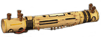
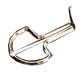
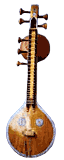

Valiha: Мадагаскарская цитра, или цилиндрическая арфа, берущая истоки в Индонезии.  На корпусе из тростника или бамбука в виде трубки крепятся 16 тонких стальных струн, которые перебирают руками. Звучание близко африканской kora.В прошлом использовался для общения с духами древних предков. В наши дни valiha - национальный инструмент, не связанный с религиозными культами. Vargan(хомуз):  Самозвучащий щипковый музыкальный инструмент в виде подковы или пластинки с прикрепленным к ней cтальным язычком. Под различными названиями распространен у многих народов. Единственный в мире музей хомузов существует в Якутске, Саха.Играющий на варгане прикладывает инструмент ко рту и приводит в колебание язычок защипыванием его загнутого кончика(полость рта служит резонатором). |
 Veena: Индийский сольный струнный щипковый инструмент. Существует несколько разновидностей; основные - Bhajni Veena и Saraswathi Veena. У типичного инструмента 4 основные и 3 басовые/бурдонные струны(две - слева и одна справа от шейки) и 19-24 подвижных лада. Корпус изготавливается из двух-трех тыкв, шейка в виде бамбукового отрезка до метра длины с двумя прикрепленными gourd-резонаторами. Звук извлекается ногтями или двумя плектрами, надетыми на указательный и средний пальцы. Настройка инструмента зависит от исполняемой мелодии. |